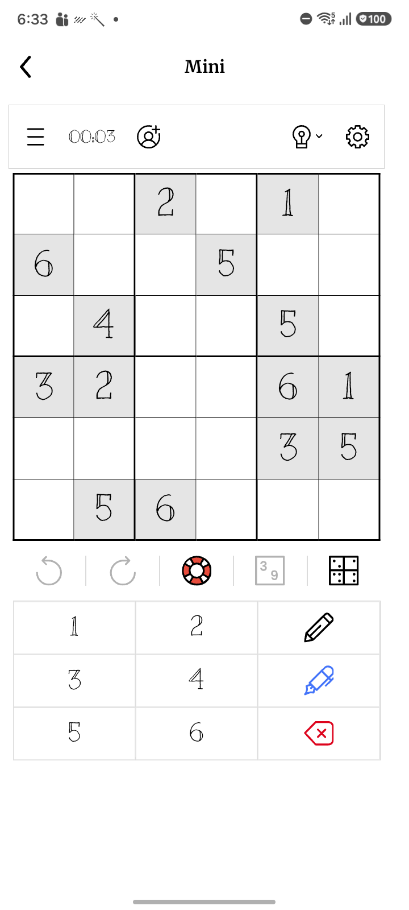
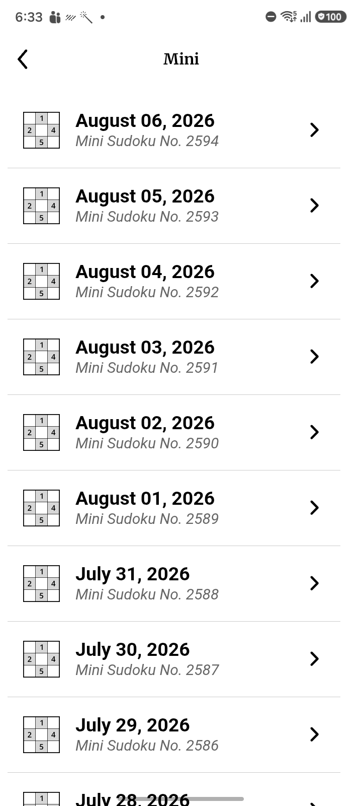
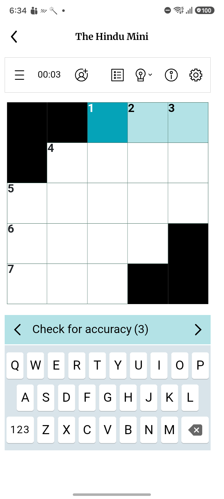

| Scenario ID | Module | Scenario | Status | Duration (sec) | AI Total | AI PASS | AI FAIL |
|---|---|---|---|---|---|---|---|
| SC_27_SUDOKU | Subscriber Games | Mini Sudoku | PASS | 89.83 | 2 | 2 | 0 |
| SC_27_THE_HINDU_MINI | Subscriber Games | The Hindu Mini | PASS | 83.49 | 1 | 1 | 0 |
| SC_27_EASY_DOWN | Subscriber Games | Easy Down | CANCELLED | 30.16 | 0 | 0 | 0 |

Image: SC_27_Sudoku_Mini.png
Confidence: High Severity: LOW
Reason: All expected UI components are present and rendered correctly. No visible UI defects.

Image: SC_27_Sudoku_Mini_List.png
Confidence: High Severity: LOW
Reason: All expected UI components are present and properly rendered. No visual defects detected.

Image: SC_27_The_Hindu_Mini.png
Confidence: High Severity: LOW
Reason: All expected UI components are present and correctly rendered. No visible UI defects detected.